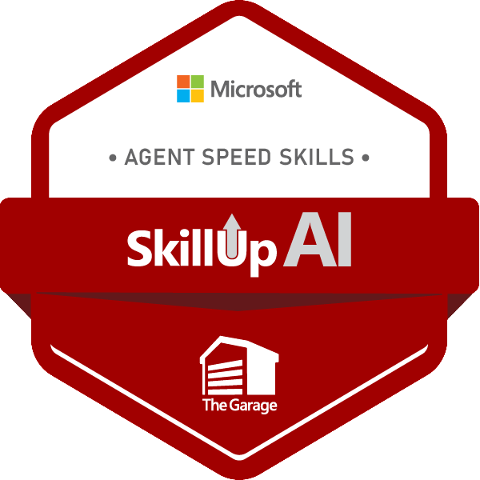

Background Summary
As a seasoned IT professional with over 16 years of experience, I am excited to announce my new role as a Digital Cloud Solution Architect at Microsoft. My journey in the information technology field has been marked by a deep expertise in architecting and strategizing large-scale infrastructure deployments, particularly within the Microsoft ecosystem.
Throughout my career, I have acted as a trusted advisor to IT departments, helping organizations align their IT strategies with business objectives to achieve measurable goals and maintain industry competitiveness. My technical skills encompass a wide range of Microsoft Azure services, including identity management, compute, security, networking, data platforms, and artificial intelligence. I have successfully led numerous IT project implementations using cloud standard frameworks, ensuring seamless transitions and optimized environments.
In addition to my technical prowess, I am adept at developing and designing security solutions to safeguard client data against prevailing cyber threats. My experience spans across various roles, from managing substantial portfolios and driving strategic identity projects to leading teams of engineers and mentoring technical leads.
I am passionate about leveraging my skills to drive digital transformation and deliver superior outcomes for clients. My commitment to continuous learning and professional development is reflected in my extensive list of certifications, including Microsoft Certified: Azure Solutions Architect Expert, Cybersecurity Architect Expert, and DevOps Engineer Expert.
Education
- Springboard - Software Engineering Career Track (2025 - 2026)
- Massachusetts Institute of Technology - Executive Certificate in AI Strategy and Product Innovation (2025 - 2025)
- Massachusetts Institute of Technology - Professional Certificate in Digital Transformation (2024 - 2025).
- University of Lagos - Bachelors, Guidance and Counseling (2003 - 2007)
Technologies
Web Development
- HTML & CSS
- JavaScript
- Web development & API
- MERN Stack
- AI & LLM
- React & Redux
Artificial Intelligence
- Generative AI
- Machine Learning
- Neural Networks
Cloud Computing
- Azure
- Blockchain
- IOT
- Cybersecurity
- DevOps
- GitHub
Achievements
- SkillUp AI: Agent Speed Skills Badge issued by The Microsoft Garage, 2025.
- AI Powered Learner Badge: MCAPS Skills Challenge, 2025.
- Microsoft Global Hackathon, 2025.
- Emeritus: AI Strategy and Leadership, 2025.
Badges
SkillUp AI Badge.
A badge that shows the project i worked on and my excellence.
AI Powered Learner Badge
A full-stack app built with Flask for the backend and a vanilla JS front end. Users provide some personal data, and in return, they receive a lucky number. The application then fetches interesting facts about that number and the user's birth year, providing a unique and engaging experience.

Star Wars
An immersive app for exploring the vast universe of the Star Wars franchise. Users can delve into detailed profiles of characters, planets, and films. Built with React for the frontend and Redux for state management, the app fetches data from an external Star Wars API, ensuring up-to-date and accurate information.

Stay tuned! Exciting projects are on the way as I progress through the Springboard course.